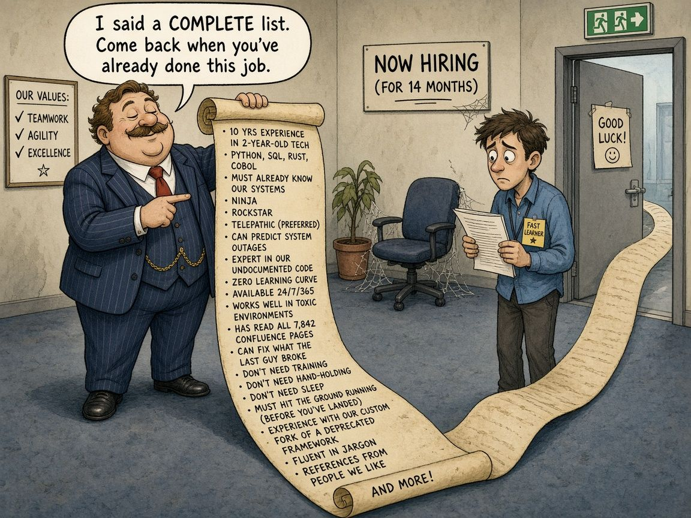

Who’s Missing From Your Data?
There’s a question I’ve started asking before I trust any chart, model or eval score: how did each row get here?
It sounds like admin. It isn’t. Most of the misleading results I’ve seen weren’t caused by bad maths. They came from a dataset that quietly filtered itself before anyone looked at it.
The hiring version
I’ve seen this from both sides of a CV. Many roles get filtered on skills people have already shown on paper. So when a company later looks at “who succeeds here”, the data only ever includes people who matched the checklist. The conclusion writes itself: everyone who succeeds here already had the skills.
But the fast learners, the career changers, and the people who would have grown into the role never got the interview. They aren’t in the data, so the data can never argue for them.

That’s survivorship bias, and it has relatives in selection bias and response bias. They all come down to the same thing: the process that collects your data is also shaping your answer.
Where it shows up in AI work
- Feedback buttons. Thumbs up and thumbs down only come from people who engaged. Someone who got a useless answer and closed the tab leaves no signal. A rising satisfaction score can mean the tool improved, or it can mean the unhappy users left.
- Evals built from logs. Building a test set from real user questions is great practice, but those logs are what people asked after deciding the tool was worth asking. The questions they stopped asking are missing.
- RAG coverage. If you only test questions your documents can answer, retrieval will look brilliant. The gaps are in the questions nobody wrote down.
The NBA version
In my NoFlightZone Spurs analytics project, lineup data is a nice trap. Lineups that play lots of minutes tend to look good, partly because coaches keep playing lineups that are already working and bench the ones that aren’t. A lineup that got only a handful of minutes never had the chance to prove itself either way.
The accounting version
From my finance days: if you only review the invoices that got approved and paid, everything looks tidy. The interesting ones are often those that were rejected, held, or never entered at all. A reconciliation that only checks what’s in the system can’t find what never made it in.
What I actually do now
- Write down the entry path. Before analysing, I note in one sentence what has to happen for a row to exist, for example “a candidate matched the checklist and got an interview”.
- Compare to the full population. How many people or events could be in the data versus how many are? A big gap is a warning, not a footnote.
- Go looking for the drop-offs. Sample the applicants who were screened out, the sessions that ended after one message, the lineups that barely played.
- Phrase conclusions with the filter attached. “Among people we interviewed…” is less exciting but much more honest.
None of this needs fancy tooling. It’s a habit of being suspicious about where your rows came from.